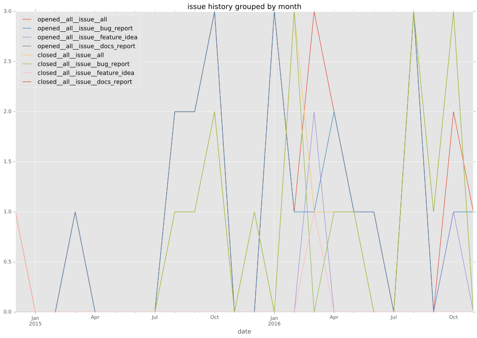

authors
- emonty
maintainers
- emonty
- shrews
- juliakreger
- j2sol
- rcarrillocruz
contributors
- larsks : 8 commits
- tonyqui : 1 commits
- emonty : 72 commits
- abadger : 5 commits
- jsmartin : 1 commits
- dagnello : 3 commits
- bcoca : 2 commits
- donovan : 1 commits
- resmo : 4 commits
- davidaah : 3 commits
- abithap : 3 commits
- Shrews : 17 commits
- ssssam : 2 commits
- tkinz27 : 1 commits
- pwnall : 3 commits
total issue counts
bugfix pull request: 23
documentation pull request: 1
pullrequest: 37
docs pull request: 2
feature pull request: 10
feature idea: 5
issue: 23
new plugin: 1
bug report: 18
issue history

pullrequest history
days open by issue type
feature pull request
count: 17
std: 61.102854463
min: 0
max: 256
median: 4.0
mean: 20.9411764706
all
count: 80
std: 86.076665857
min: 0
max: 506
median: 1.0
mean: 38.15
documentation pull request
count: 2
std: 0.0
min: 0
max: 0
median: 0.0
mean: 0.0
pullrequest
count: 0
std: nan
min: nan
max: nan
median: nan
mean: nan
docs pull request
count: 4
std: 0.57735026919
min: 0
max: 1
median: 0.5
mean: 0.5
bugfix pull request
count: 38
std: 48.4739595151
min: 0
max: 206
median: 1.0
mean: 18.7105263158
feature idea
count: 4
std: 239.312905349
min: 0
max: 506
median: 141.0
mean: 197.0
issue
count: 0
std: nan
min: nan
max: nan
median: nan
mean: nan
new plugin
count: 1
std: nan
min: 233
max: 233
median: 233.0
mean: 233.0
bug report
count: 14
std: 81.7514324235
min: 0
max: 252
median: 31.0
mean: 68.7142857143
closures grouped by total days open